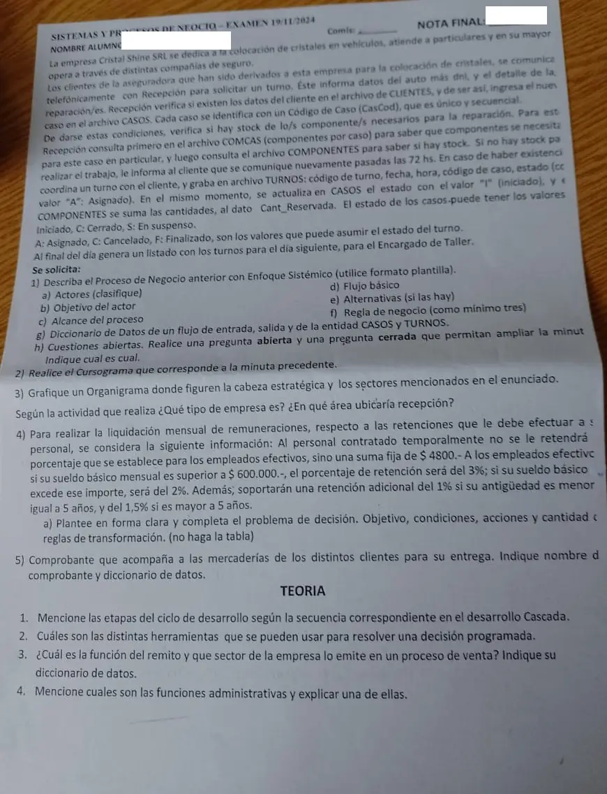

3° parcial, 19/11/2024 (cristales)
3° parcial, 19/11/2024
Enunciado


Preguntas con opciones
Salen de este examen, adaptadas. Dejalas para el final, porque las opciones pueden dar pistas.
- 1
En el ciclo en cascada del apunte, la actividad que sigue al relevamiento es
Se tomó: 3° parcial 19/11/24, adaptada
El orden es relevamiento, análisis, diseño, desarrollo y documentación, pruebas y mantenimiento, instalación y evaluación.
- 2
Según su actividad, una empresa de seguros es una empresa
Se tomó: 3° parcial 19/11/24, adaptada
El apunte pone a los seguros, el transporte y los bancos entre las empresas de servicio.
- 3
En el modelo de Mintzberg, el directorio y la gerencia general forman
Se tomó: 3° parcial 19/11/24, adaptada
El directorio es la cabeza estratégica y la gerencia general la cabeza ejecutiva.
Propuesta de respuesta
Respuesta no verificada. La propuso Luta Studios con inteligencia artificial y ningún docente la revisó. Puede tener errores.
Ejercicio 1. Proceso de negocio con enfoque sistémico
Proceso de negocio. Asignación de turnos para la colocación de cristales.
Objetivo del actor. El cliente quiere conseguir un turno para que le coloquen los cristales de su vehículo.
Actores.
- Principal. El cliente derivado por la aseguradora.
- De apoyo. Recepción.
- Pasivos. El Encargado de Taller, que recibe el listado, y la compañía de seguros, que derivó al cliente.
Alcance del proceso. Desde que el cliente llama a Recepción para pedir un turno hasta que se genera el listado de turnos del día siguiente para el Encargado de Taller.
Evento externo iniciador. El cliente derivado por la aseguradora llama para solicitar un turno.
Flujo básico.
- El Cliente se comunica telefónicamente con Recepción para solicitar un turno.
- El Cliente informa a Recepción los datos del auto, su DNI y el detalle de las reparaciones.
- Recepción verifica en el archivo CLIENTES que existan los datos del Cliente.
- Recepción ingresa el nuevo caso en el archivo CASOS, con su CasCod.
- Recepción consulta en el archivo COMCAS los componentes que necesita el caso.
- Recepción consulta en el archivo COMPONENTES si hay stock de esos componentes.
- Recepción coordina un turno con el Cliente.
- Recepción graba el turno en el archivo TURNOS, con código de turno, fecha, hora, código de caso y estado «A».
- Recepción actualiza el estado del caso en CASOS con el valor «I».
- Recepción suma las cantidades de los componentes al dato Cant_Reservada de COMPONENTES.
- Recepción genera al final del día el listado de turnos del día siguiente para el Encargado de Taller.
Alternativas.
- Paso 3. El Cliente no está en el archivo CLIENTES. La minuta no dice qué se hace, y va a las cuestiones abiertas.
- Paso 6. No hay stock de algún componente. Recepción le informa al Cliente que se comunique nuevamente pasadas las 72 horas.
Reglas de negocio.
| Regla | Tipo |
|---|---|
| Solo se ingresa un caso si el cliente está en el archivo CLIENTES | AR |
| El CasCod de un caso nuevo es el siguiente al último, porque es único y secuencial | CA |
| No se asigna un turno si no hay stock de los componentes del caso | AR |
| Al grabar el turno, el caso pasa a «I» y se suman los componentes a Cant_Reservada | AD |
| El estado de un caso es I, C o S, y el de un turno, A, C o F | HE |
Diccionario de datos.
Flujo de datos de entrada
E1 pedido-turno = DNI + datos-auto(e) + 1{ detalle-reparación }N
Flujo de datos de salida
S1 listado-turnos = fecha + 1{ cod-turno + hora + CasCod + DNI + datos-auto(e)
+ 1{ cod-componente + cantidad }N }N
Entidades
CASOS = CasCod + DNI + datos-auto(e) + 1{ detalle-reparación }N + estado-caso(D)
TURNOS = cod-turno + fecha + hora + CasCod + estado-turno(D)
Estructura de datos
datos-auto(e) = patente + marca + modelo
Elementos de datos discretos
Atributo: estado-caso (D)
Descripción: Estado del caso
Valores posibles: I iniciado, C cerrado, S en suspenso
Atributo: estado-turno (D)
Descripción: Estado del turno
Valores posibles: A asignado, C cancelado, F finalizadoCuestiones abiertas.
- Abierta, a Recepción. ¿Qué se hace cuando el cliente no está en el archivo CLIENTES?
- Cerrada, a Recepción. ¿El caso queda en suspenso cuando no hay stock?
Ejercicio 2. Cursograma
Tocá el dibujo para verlo en pantalla completa.
Ejercicio 3. Organigrama, tipo de empresa y Recepción
La cabeza estratégica es la Gerencia General. Es una empresa de servicio, porque su actividad es colocar cristales en vehículos, casi siempre para compañías de seguro. Recepción va en Comercialización, porque atiende a los clientes y les da los turnos.
Ejercicio 4. Decisión programada
Objetivo. Determinar la retención mensual que se le efectúa a cada empleado en la liquidación de remuneraciones.
| Condición | Valores | |
|---|---|---|
C1 | ¿Es empleado efectivo? (si no, contratado temporalmente) | S, N |
C2 | ¿Su sueldo básico mensual es superior a $600.000? | S, N |
C3 | ¿Su antigüedad es mayor a 5 años? | S, N |
| Acción | |
|---|---|
A1 | Retener una suma fija de $4800 |
A2 | Retener el 3 % |
A3 | Retener el 2 % |
A4 | Retener un 1 % adicional |
A5 | Retener un 1,5 % adicional |
Reglas de transformación. .
Ejercicio 5. Comprobante de la entrega
Es el remito (RTO). Prueba legal de la entrega y la recepción de la mercadería. Es prenumerado, tiene tres ejemplares y puede no llevar precios.
remito = nro-remito + fecha + datos-empresa(e) + datos-cliente(e)
+ 1{ cantidad + cod-artículo + descripción }N
+ firma-conformidad
datos-empresa(e) = razón-social + CUIT + domicilio
datos-cliente(e) = nombre + domicilio + CUITTeoría
1. Etapas de la cascada. Relevamiento de requerimientos, análisis de las necesidades del sistema, diseño del sistema recomendado, desarrollo y documentación del software, pruebas y mantenimiento, e instalación y evaluación.
2. Herramientas de una decisión programada. La tabla de decisión, que es la expresión gráfica del algoritmo, con sus condiciones, acciones y reglas de transformación. Lo mismo se puede representar con un árbol de decisión.
3. Remito en una venta. Es el documento con fuerza legal que prueba la entrega y recepción de la mercadería. En el procedimiento de ventas lo emite Almacenes, después de preparar la mercadería. El original va al comprador, el duplicado vuelve firmado al vendedor y el triplicado queda con el transportista. Su diccionario es el del ejercicio 5.
4. Funciones administrativas. Planificación, organización, dirección y control. La organización es ordenar y distribuir el trabajo, la autoridad y los recursos entre los miembros. Determina qué tareas hay, quién las hace, cómo se agrupan, quién rinde cuentas a quién y dónde se decide, y produce la estructura organizacional.
Respuesta no verificada. Puede tener errores.
Se armó con la página del 2° parcial (plantilla de enfoque sistémico, diccionario de datos, cuestiones abiertas, símbolos y reglas del cursograma y ciclo en cascada), la del 1° parcial (organigrama, Mintzberg, áreas genéricas y comprobantes), la del final (tipo de empresa y cabeza de la estructura) y la del 3° parcial (cómo plantear el problema de decisión).
Quedó en duda: La foto corta el borde derecho de algunos renglones. En las retenciones la hoja dice «superior» para el 3 % y «excede» para el 2 %, que se contradicen, y se tomó que el 2 % es para un sueldo que no excede los 600.000 pesos. Tampoco queda claro si el 1 % o 1,5 % adicional es también para los contratados, y la cuenta de 8 reglas no cambia. Los datos del auto y de los clientes no los detalla la minuta. Los nombres de las áreas del organigrama son una deducción, y Recepción podría ir también en Servicios. En el cursograma, la página no muestra cómo se graba en un archivo digital. En el objetivo, las páginas dejan abierto si admite «calcular».
¿Cómo te fue?
Marcá cada tema del examen. Las preguntas con opciones ya se corrigieron solas.
- Enfoque sistémicoEl proceso de negocio con enfoque sistémico, en 2° parcial
- CursogramaSímbolos, en 2° parcial
- OrganigramaEl organigrama, en 1° parcial
- Decisión programadaDecisiones programadas y no programadas, en 3° parcial
- ComprobantesClasificación de los comprobantes, en 1° parcial
- TeoríaPreguntas de teoría con respuesta en el apunte, en 1° parcial